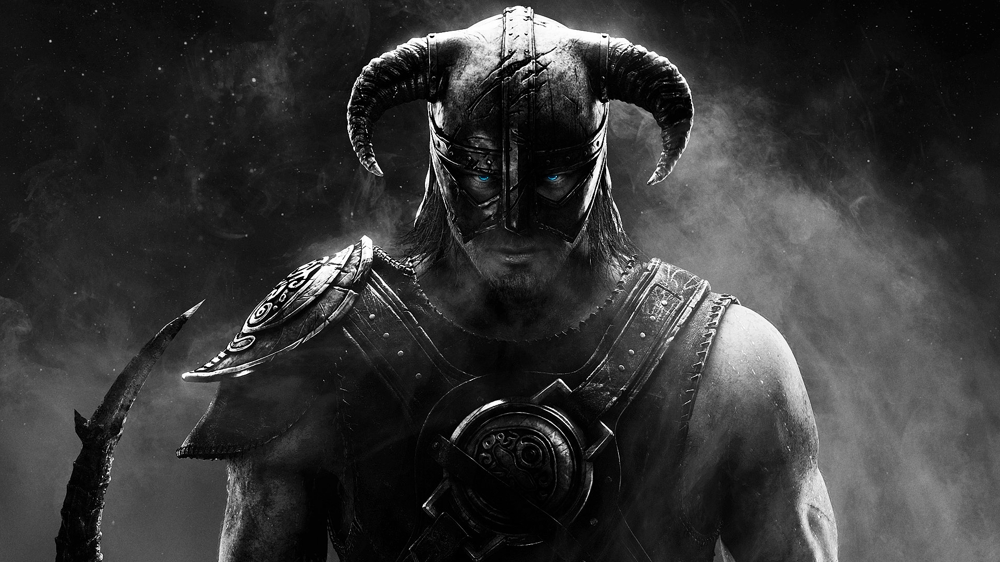

После побега нашего героя Довакина от имперской стражи, Довакина призывают седобородые прейти к ним на обучение туума, овладению голоса дракона.

После побега нашего героя Довакина от имперской стражи, Довакина призывают седобородые прейти к ним на обучение туума, овладению голоса дракона.
Седобородые. Монахи живущие на холме девяти шагов изучающие всю жизнь голос дракона и туум.
Алдуин. Дракон обучающий голосу туум и разговору на драконьем языке живущий на холме небесной горы.Так же помогает Довакину противостоять пожерателю миров Портурнаксу.